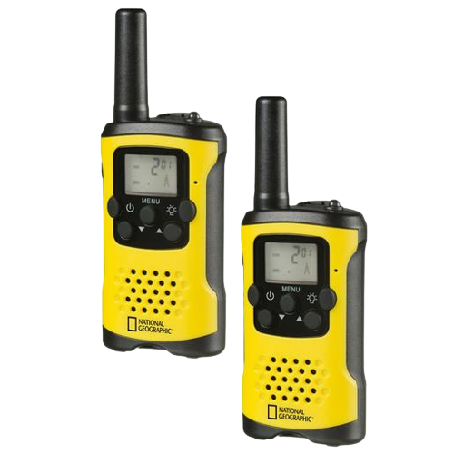
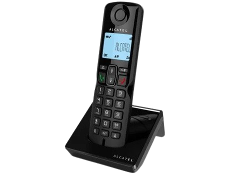
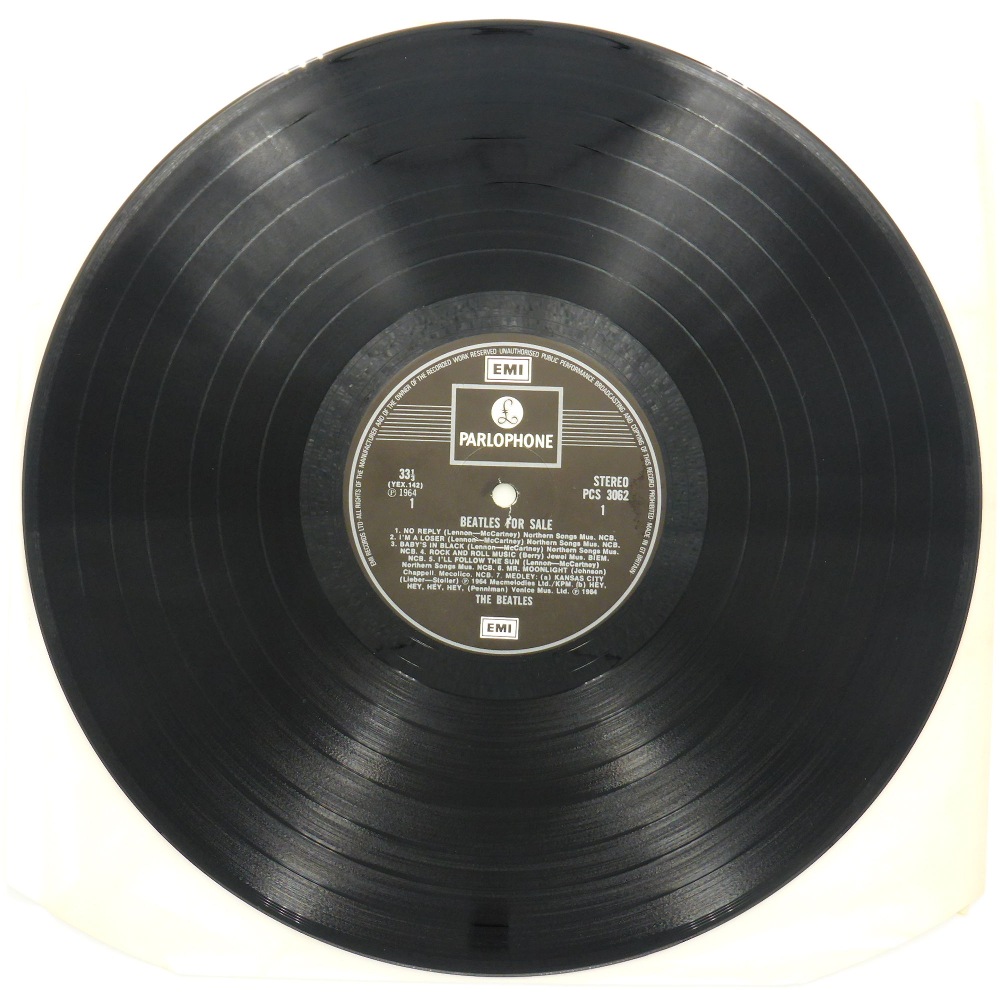
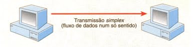
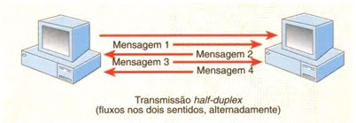
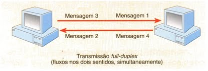
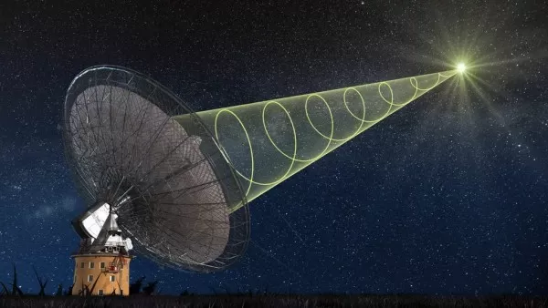
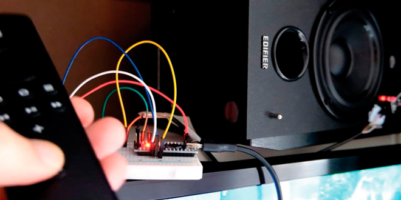
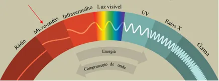
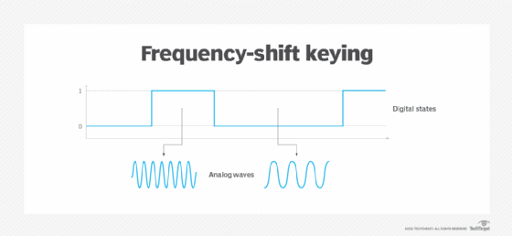

Sistemas de Comunicação
Imagens



O que é?
O que é um sistema de comunicação?
Um sistema de comunicação é um grupo de componentes de comunicação integrados em um sistema conexo. Estes componentes, por norma, são meios e sistemas de transmissão, redes de computadores e protocolos, que quando compatíveis uns com os outros, operam em união e cumprem a sua finalidade de transmitir/receber uma mensagem (assegurar a comunicação entre A e B).
Existem vários sistemas de comunicação, e neste website vou explicar como funcionam estes sistemas na sua generalidade e depois vou utilizar um exemplo (walkie-talkies) para explicar o quão complexo um sistema destes pode ser.
Como funcionam?
Como funciona um sistema de comunicação?
Qualquer sistema de comunicação funcionará através de transmissões entre os seus diversos componentes. O tipo de transmissão irá variar de dispositivo para dispositivo ou, contextualmente, de emissor para recetor. Em todas as transmissões existem um emissor, um recetor, um meio de transmissão e a mensagem a ser transmitida no seu respetivo idioma.
Para a mensagem ser recebida e compreendida pelo recetor, é preciso os dois comunicarem-se através do mesmo idioma. Existem vários fatores como a qualidade do meio de transmissão e o tipo de informação que vão garantir a eficiência da transmissão de uma determinada mensagem neste processo.
O processo de comunicação representa todas a etapa de um momento em que a parte A comunica com a parte B transmitindo uma mensagem. Este divide-se nos seguintes passos:
- O emissor gera a informação.
- Para poder transmitir a informação com precisão, o emissor utiliza um conjunto de símbolos conhecidos pelo recetor.
- Esses símbolos são codificados para que possam ser transmitidos pelo meio físico disponível.
- Em seguida, ocorre a transmissão de símbolos codificados (o sinal) ao recetor (destinatário).
- Os símbolos são decodificados e reproduzidos.
- A última etapa é a recriação, pelo recetor, da informação transmitida, mesmo com uma possível degradação da qualidade de sinal
Tipos de transmissão:

Simplex
Ex: Rádio, TV
Neste tipo de transmissão, o emissor manda a mensagem para o recetor, de modo unidirecional e sem que haja resposta por parte de recetor. Resumidamente, a mensagem enviada pelo emissor é recebida pelo recetor sem que haja resposta.

Half-Duplex
Ex: Walkie-Talkie
Neste tipo de transmissão, o ponto A pode enviar uma mensagem para o ponto B, e o ponto B pode também mandar uma mensagem para o ponto A, porém, a troca de mensagens entre os dois não pode ser em simultâneo, isto é, tem que haver uma transmissão de cada vez e enquanto estiver a ocorrer uma transmissão só pode ocorrer esta e somente esta transmissão. Resumidamente, não podem haver transmissões entre ponto A e ponto B ao mesmo tempo. Para o ponto B enviar uma mensagem, tem de esperar que o ponto A termine a sua transmissão, e vice-versa.

Full-Duplex
Ex: Chamada de áudio/vídeo
Neste tipo de transmissão, podem haver transmissões em simultâneo de A para B e de B para A, ao contrário do half-duplex. Resumidamente, o emissor e o recetor podem variar e podem existir várias mensagens ao mesmo tempo, não sendo preciso esperar uma transmissão acabar para começar outra.
Exemplo
Walkie-Talkies
Para explicar a matéria na prática, vamos aplicá-la em um exemplo real e relativamente comum, os Walkie-Talkies. Estes dispositivos são perfeitos para exemplificar todos os conceitos de redes de comunicação envolvidos neste sistema por serem um exemplo comum e que todos conhecemos, logo é fácil aplicar estes conceitos e percebê-los.
Comunicação
Exemplificando um cenário com walkie-takies, uma pessoa tem o dispositivo A e outra pessoa tem o
dispositivo B.
A pessoa com o dispositivo A quer enviar uma mensagem à pessoa com o dispositivo B, logo, o dispositivo A
será o emissor, o dispositivo B será o recetor e a mensagem será transmitida através
de um dos canais dos walkie-talkies, que será o meio de transmissão da mensagem, sendo a
mensagem correspondente ao que a pessoa A disser no canal à pessoa B.
Para isto ser bem sucedido, ambos precisam de estar no mesmo canal enquanto ocorre a transmissão da
mensagem.
Tipo de transmissão
O tipo de transmissão utilizado pelos walkie-talkies é a Half-Duplex.
Quando estamos a usar walkie-talkies, só podemos falar num canal se ninguém estiver a falar, isto
é, duas ou mais pessoas não podem falar ao mesmo tempo, porque o sentido da comunicação é unidirecional.
Se tentarmos falar enquanto alguém já estiver a falar, cancelamos a comunicação do canal, porque neste tipo
de sistemas não é possível enviar mensagens ao mesmo tempo que recebemos.
Nos telemóveis, por exemplo, em chamada normal, o sentido da comunicação é bidirecional, isto é, é um
sistema full-duplex, em que podemos receber e enviar mensagens simultaneamente
(neste caso falar ao mesmo tempo que ouvimos).
Transmissão por difusão e ponto a ponto
As transmissões podem ser feitas por difusão (broadcast), difusão seletiva (multicast) ou ponto a ponto
(peer to peer).
Ocorre difusão quando a mensagem é simultaneamente transmitida para todos (não definidos) os recetores,
e a difusão
seletiva é o mesmo processo só que para um grupo de recetores previamente conhecido e identificado. No
caso de trasnmissão ponto a ponto, como o nome indica, a mensagem vai apenas de um emissor específico
para um recetor específico.
No caso dos walkie-talkies com vários canais (os mais comuns), estamos perante um caso de difusão (broadcast), onde existe um canal em
que um emissor passa a informação para todos os recetores que estiverem conectados ao canal.
No caso de walkie-takies específicos com apenas um canal em que só walkie-talkies daquele tipo são permitidos,
podemos dizer que é uma difusão seletiva (multicast).
Se existirem dois aparelhos walkie-talkies que só sejam compatíveis entre si e com mais nenhum outro
dispositivo, será então uma transmissão ponto a ponto.
Transmissão por baseband e broadband
Este conceito não se aplica aos walkie-talkies, e sim a cabos de transmissão de informação (cabos de rede).
Resumidamente, existem dois tipos de transmissão de informação por cabo: baseband (banda-base)
e broadband (banda larga).
No caso da baseband, a informação é transmitida através de um único sinal digital de dados que ocupa a capacidade
máxima do canal, circulando a uma frequência única pelo cabo. Este caso é comum nas redes de tipo LAN.
No caso da broadband, é possível haver a circulação de vários sinais em simultâneo, mas os mesmos têm de ser
analógicos. Esta técnica é usada em alguns cabos de rede como o ADSL.
Transmissão wireless
Tudo o que se refere a transmissão wireless refere-se a três tipos de transmissão sem fios:

Ondas de rádio
Ex: GPS Satélite, TV Digital, Walkie-Talkies, Rádio FM
Neste tipo de ondas, o emissor e o recetor têm de estar na mesma linha de sinal, e estas transmissões podem ir até 30 metros de distâncias.

Infravermelhos
Ex: Comandos de garagem, tv, projetores

Micro-ondas
Ex: Bluetooth, WIFI, WiMAX, Radares, eletrodomésticos
Os walkie-talkies são exemplos de transmissão sem fios através de ondas de rádio, como se pode ver nos exemplos do esquema anterior.
Transmissão síncrona e assíncrona
No caso dos walkie-talkies (comunicação por rádio VHF), estamos perante comunicação síncrona.
Como já foi explicado, é impossível falar enquanto outra pessoa estiver a falar nos walkie-talkies, ou
seja, um fala e o outro escuta, e vice-versa, não há dois sentidos de mensagens em simultâneo. A mensagem
é trafegada pelo canal de comunicação num único sentido.
Sinais analógicos e digitais
A maioria dos walkie-talkies, desde que foram inventados, utilizam sinais analógicos para se comunicarem entre si, sendo este um sinal cuja qualidade de transmissão tende a variar mediante a distância entre nós, porém, com o avanço das tecnologias, já foram criados alguns walkie-takies que fazem uso do sinal digital.
Largura de banda e compressão de dados
A largura de banda corresponde à capacidade de transmissão em um determinado contexto, seja este um meio de transmissão, uma rede ou uma conexão. Este valor indica a velocidade a que os dados viajam entre dois pontos, num determinado intervalo de tempo.
No caso dos sinais analógicos, a largura de banda mede-se em heartz (Hz) e aplica-se aos walkie-takies
que utilizam tecnologia analógica.
No caso dos sinais digitais, a largura de banda mede-se em bits por segundo (bps) e está presente nos
walkie-takies digitais.
Modulação
Nos walkie-talkies digitais, o tipo de modulação das ondas do sinal digital é a Frequency Key Shifting, ou modulação em frequência, onde a ondas que correspondem ao bit 1 vão ser o dobro das ondas que correspondem ao bit 0.

Contact
Gostaste do website? Ficaste com alguma dúvida? Entra em contacto comigo! Basta preencheres o formulário a seguir.